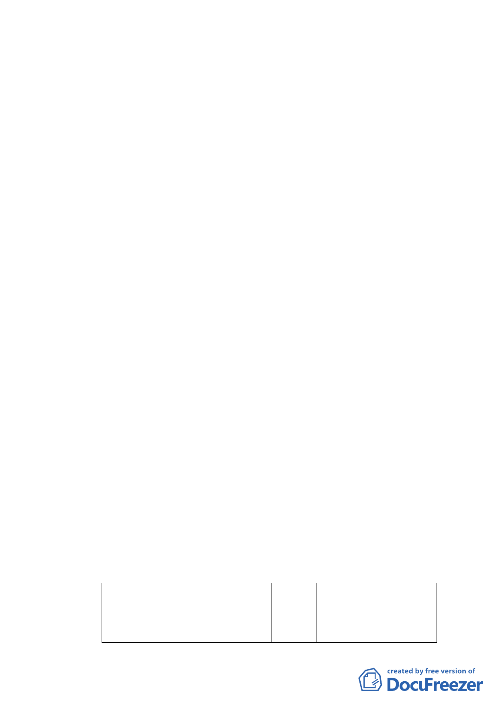

全防災堪虞。
本更新單元經檢討符合 100 年 9 月 20 日府都新字第
10031165100 號公告「臺北市老舊中低層建築社區辦理都市
更新擴大協助專案計畫『行動計畫一：以都市計畫專案變更
方式協助更新重建』」之條件：l.本更新單元為都市計畫之第
三種住宅區及第三之一種住宅區；2.本更新單元面積為 2,262
平方公尺，為非完整街廓；3.本更新單元內均為四層樓建築，
戶數共計 65 戶。本案藉由都市計畫專案辦理細部計畫變更，
期爭取本專案相關容積獎勵，改善居住及周邊環境，促進老
舊建築社區轉型為節能減碳、生態、友善的社區。
三、原都市計畫及土地使用現況
（一）原都市計畫
本案屬「修訂忠孝東路、松山、南港區界線、信義計畫界
線所圍地區細部計畫（第二次通盤檢討）暨擬定水森坡附
近地區細部計畫配合修訂主要計畫案」計畫範圍內，使用
分區為住三、住三之一，建蔽率 45％，容積率 225％及 300
％，惟本案住三之一面臨道路路寬 16 公尺以下，故容積率
仍以 225％規定。
（二）土地使用現況
計畫區內共有 8 棟 4 層樓建築物，除 1 樓沿街面零星商業
使用，其餘大部分皆作住宅使用，土地權屬除 39 平方公尺
為國有土地(國產局管有)外，其餘均為私有。
四、變更細部計畫內容：
（一）變更土地使用分區
位置
原計畫 新計畫 面積（㎡）
變更理由
松德路北側、忠孝東 第三種住 第三種住宅 1,355 配合「修訂臺北市老舊中低層建
路五段以南，西側為 宅區
區(特)
築社區辦理都市更新擴大協助
8公尺寬虎林街
專案計畫」，變更原計畫內容。
-2-